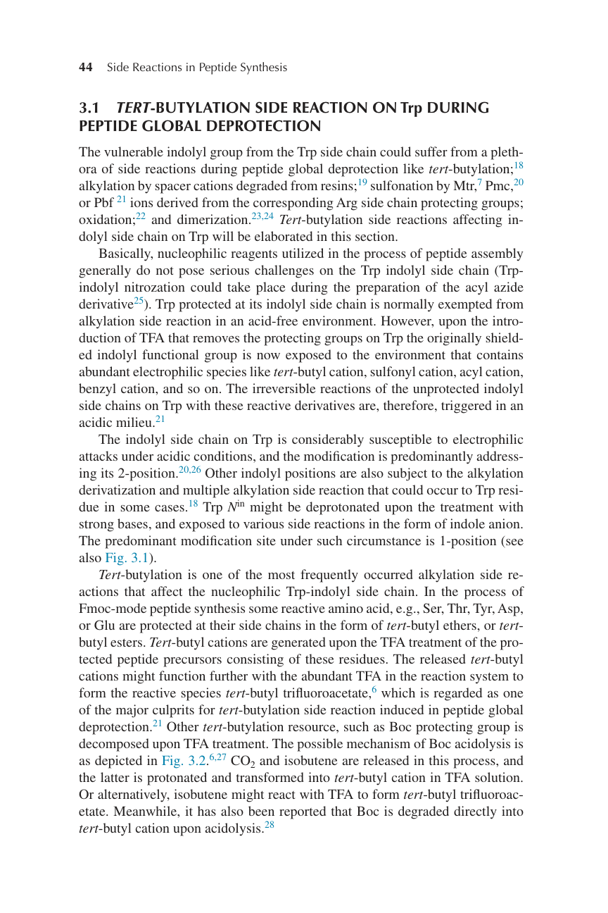
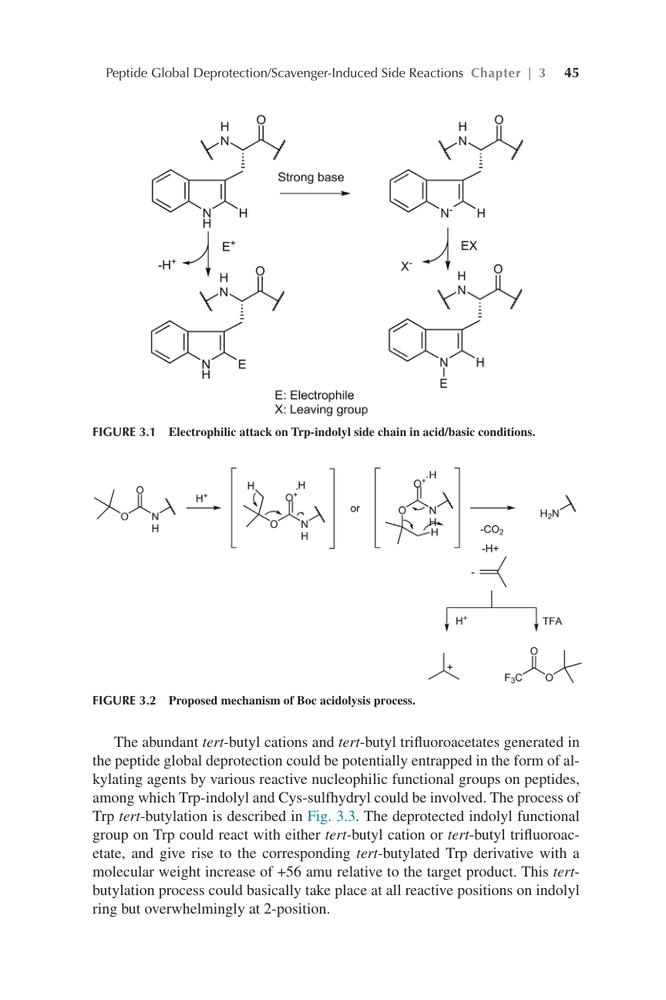
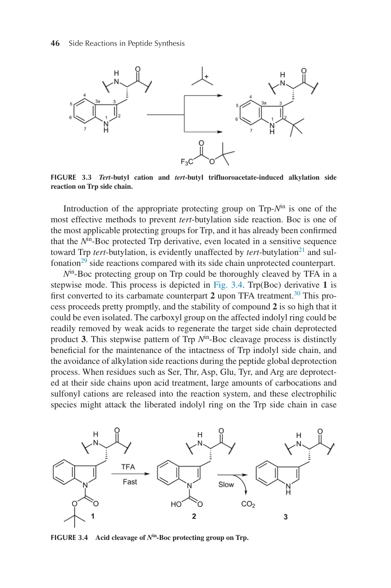
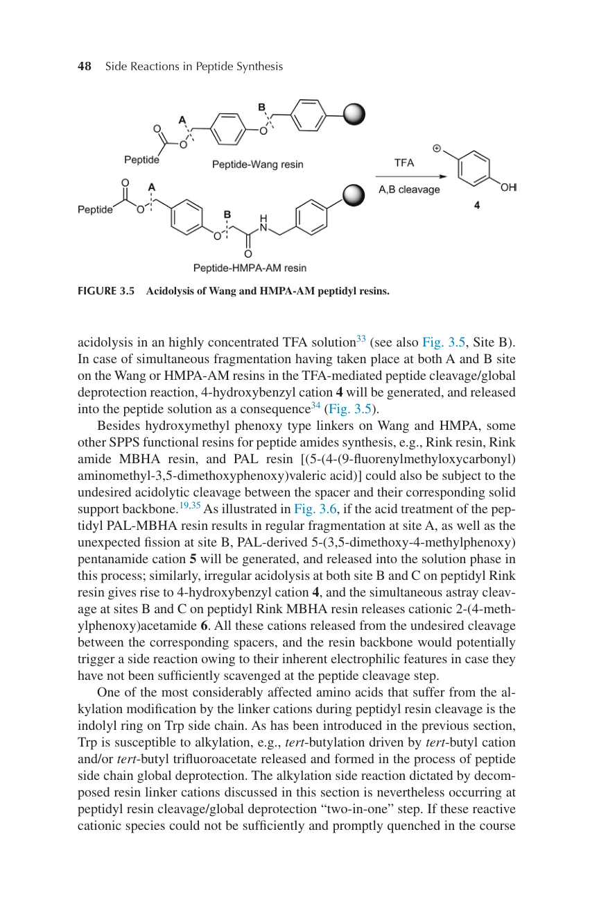
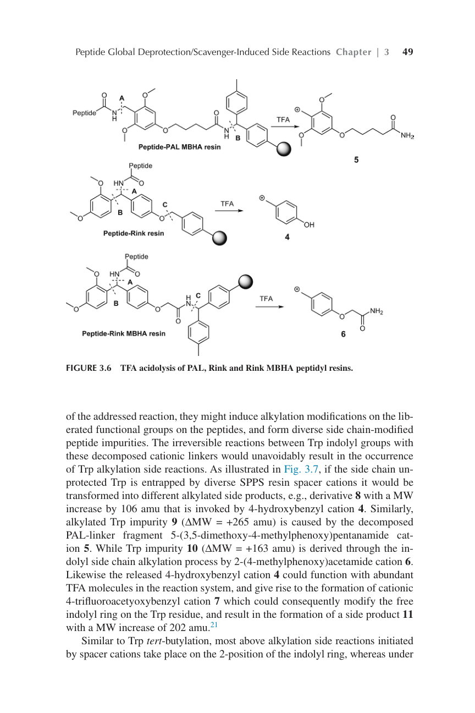
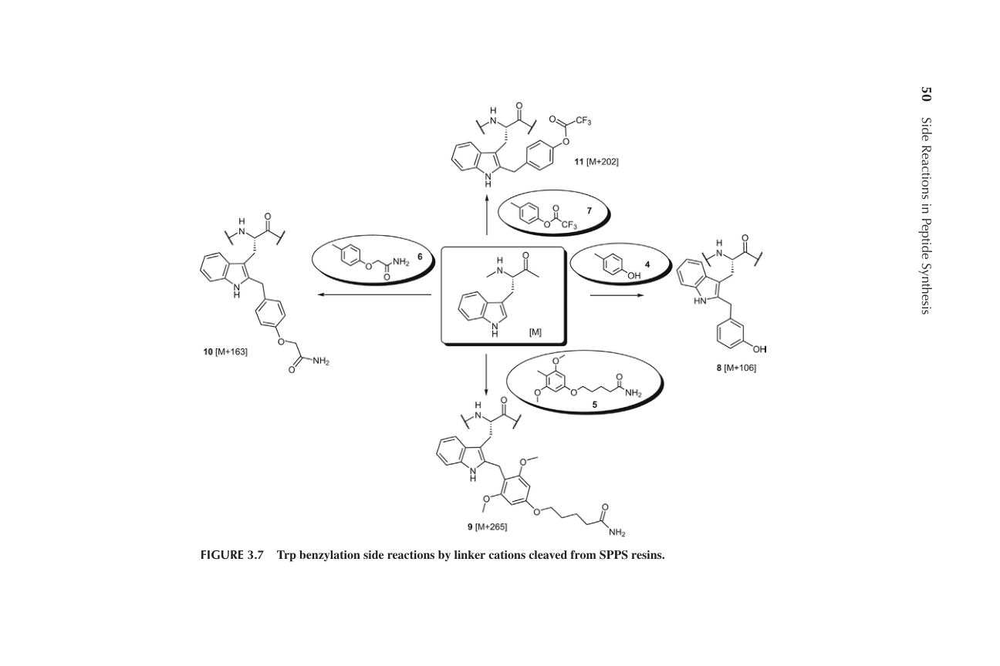

Chapter 3: Peptide Global Deprotection/Scavenger-Induced Side Reactions
多肽全局脱保护/清除剂诱导的副反应
学习日期：2026-03-25
教材：Side Reactions in Peptide Synthesis (Yang, Yi, 2015)
多肽固相合成（SPPS）的成功不仅取决于目标肽链的组装，还取决于肽链从固相载体上的裂解和侧链保护基的全局脱保护。在这一过程中，HF和TFA分别用于Boc和Fmoc化学中的肽链裂解和全局脱保护。 裂解下来的保护基在反应系统中以碳正离子、磺酰基阳离子或其他衍生物的形式存在，在未被清除剂淬灭之前，这些反应性亲电物种可能与肽侧链上释放的亲核官能团发生反应，例如： - Met上的硫醚基团 - Tyr上的酚基团 - Trp上的吲哚基团 - Ser/Thr上的羟基 - Cys上的巯基 - Arg上的胍基 这些反应可能以可逆或不可逆的方式进行，产生各种加成副产物。
Trp侧链的吲哚基团在肽全局脱保护过程中容易受到多种副反应的影响： - 叔丁基化（tert-butylation） - 树脂间隔基阳离子的烷基化 - Mtr、Pmc或Pbf离子的磺化 - 氧化 - 二聚化 Trp吲哚侧链在酸性条件下极易受到亲电攻击，修饰主要发生在2位。
【Figure 3.1 Trp吲哚侧链在酸/碱条件下的亲电攻击】

在Fmoc模式肽合成中，一些活性氨基酸（如Ser、Thr、Tyr、Asp、Glu）的侧链以叔丁基醚或叔丁基酯的形式保护。TFA处理含有这些残基的保护肽前体时，会生成叔丁基阳离子。 叔丁基阳离子来源： 1. 侧链保护基的裂解（tBu醚/酯） 2. Boc保护基的分解 分子量增加：+56 amu
【Figure 3.2 Boc酸解过程的可能机理】

【Figure 3.3 叔丁基阳离子和叔丁基三氟乙酸酯诱导的Trp侧链烷基化副反应】

1. **Trp侧链保护** - 在Trp Nin引入Boc保护基 - Nin-Boc保护的Trp衍生物能明显避免叔丁基化和磺化副反应 2. **清除剂的使用** - Reagent K（82.5% TFA/5% phenol/5% H2O/5% thioanisole/2.5% EDT） - EDT在清除叔丁基阳离子方面最有效 - 水是良好的淬灭试剂
**原因：** 除了叔丁基化副反应外，Trp残基还可能受到降解的连接基阳离子介导的Trp烷基化影响。 主要原因：固相载体上连接基的酸诱导酸解断裂。连接基片段以各种阳离子的形式释放到溶液相中，这些阳离子可以通过亲电加成攻击Trp上的吲哚环。 **受影响的树脂类型：** 1. Wang树脂和HMPA树脂 - 正常裂解：Site A（肽C末端与连接基之间） - 异常裂解：Site B（烷基苯基醚键） - 产生：4-羟基苄基阳离子 2. Rink树脂、Rink amide MBHA树脂、PAL树脂 - 可能发生间隔基与固体载体骨架之间的意外酸解裂解 - 产生各种阳离子（+106 amu, +163 amu, +202 amu, +265 amu）
【Figure 3.5 Wang和HMPA-AM肽基树脂的酸解】

【Figure 3.6 PAL、Rink和Rink MBHA肽基树脂的TFA酸解】

【Figure 3.7 SPPS树脂裂解的连接基阳离子对Trp的苄基化副反应】

**预防策略：** 1. **分步裂解/全局脱保护策略** - 用稀释的TFA溶液处理，避免高浓度TFA 2. **使用酸稳定的树脂间隔基** - 新一代Wang树脂，PAL或Rink连接到aminomethyl基团 3. **优化TFA浓度和处理时间** 4. **使用适当的清除剂** - Reagent R（anisole/thioanisole/EDT）、1,3-dimethoxybenzene（DMB）
**现象：** 一些脆弱的Trp残基在TFA介导的肽侧链全局脱保护步骤还受到TFA/EDT介导的修饰影响，转化为环状二硫缩醛加合物。 分子量增加：+172 amu 修饰位置：吲哚环的2位 **发现：** - 在肽侧链全局脱保护反应中首次检测到（15 equiv. EDT, TFA/H2O 95:5, 50°C） - 目的是定量裂解Arg侧链上的Mtr保护基 - 通过NMR确认为Trp衍生物在吲哚侧链2位被TFA/EDT修饰（五元环二硫缩醛形式） **预防策略：** 1. 使用新型Arg保护基 - MIS（1,2-dimethylindole-3-sulfonyl） 2. 用DTT或其他硫醇衍生物代替EDT 3. 合理缩短全局脱保护时间 4. Trp Nin-Boc保护
**现象：** Trp二聚化行为对受影响蛋白质的生理性质产生极其重要的影响。肽通过Trp二聚化主要发生在TFA或HF介导的肽侧链全局脱保护步骤，由强酸的存在催化。 **机理：** - 类似于Mannich型二聚化 - 两个Trp残基在各自吲哚环的2位连接 - 过程通过质子化形成阳离子Trp衍生物引发 **预防策略：** 1. 合理缩短肽全局脱保护反应时间 2. Boc保护的Trp被证实对这种副反应不太敏感
**三烷基硅烷作为清除剂：** 三烷基硅烷家族可在酸性条件下作为温和还原剂。 **常用的三烷基硅烷化合物：** 1. TIS（三异丙基硅烷） - 空间效应明显，反应选择性好 2. TES（三乙基硅烷） - 价格低，但还原能力强 **TES的还原副反应：** - TES内在具有比TIS更强的还原能力 - 可能导致吲哚衍生物在酸性条件下还原为二氢吲哚 - 分子量变化：Trp → Trp-indoline（+2 amu） **预防策略：** 1. Trp吲哚侧链用Boc保护 2. 使用TIS代替TES作为肽全局脱保护的清除剂
**现象：** Cys侧链上的巯基官能团在肽侧链全局脱保护反应中可能遭受不可逆的烷基化副反应。 **叔丁基化：** - 来源：Boc或tBu保护基衍生的叔丁基阳离子、叔丁基三氟乙酸酯 - 产物：叔丁基硫醚杂质 **三苯甲基化（Tritylation）：** - Cys也可被Trt阳离子可逆修饰 - 在肽侧链全局脱保护过程中转化回Cys(Trt)衍生物 **预防策略：** 使用能够充分捕获阳离子的适当清除剂。 **清除剂选择：** 1. EDT：对叔丁基阳离子最有效 2. 三烷基硅烷（TES或TIS）：可有效淬灭Trt阳离子
**现象：** Cys上的自由巯基侧链可通过空气介导的氧化以分子内或分子间二硫键桥的形式与另一个巯基共价连接。 **Cys-EDT加合物的形成：** 分子量增加：+92 amu **发现的共同特征：** 1. 受影响的目标肽含有具有自由巯基侧链的Cys残基 2. 大多数敏感Cys残基最初用Trt保护 3. TFA通常用于最终全局脱保护处理 4. EDT作为全局脱保护混合物的成分清除剂之一 **Cys-EDT-tBu加合物：** 分子量增加：+148 amu **预防策略：** 1. 在肽侧链全局脱保护反应中用非硫醇清除剂代替EDT（H2O代替EDT） 2. 使用替代硫醇衍生物（DTT、DODT或1,8-octanedithiol） 3. 通过还原剂（如TCEP）还原杂质，实现目标Cys肽的再生
**背景：** Arg残基胍基侧链上的磺酰保护基（如Pmc、Mtr、Pbf）对TFA处理表现出相对增强的稳定性，这在定量去除磺酰保护基和Arg残基再生方面引入了挑战。 **磺化副反应：** 从Arg侧链裂解下来的磺酰基阳离子可能在肽侧链全局脱保护反应过程中对敏感底物引发不希望的修饰。 **受影响的残基：** 1. Trp、Tyr、Fmoc部分 - 转化为Pmc-加合物或磺酸衍生物 2. Ser和Thr - 磺化氨基酸副产物Ser(SO3H)和Thr(SO3H)，+80 amu 3. Arg本身 - Arg(SO3H)副产物，+80 amu **预防策略：** 1. 使用Pbf保护基 - 可显著降低Trp磺化副反应 2. 使用新型Arg保护基 - MIS（1,2-dimethylindole-3-sulfonyl） 3. 使用Fmoc-Arg(Boc)2-OH - 完全避免磺化副反应 4. 清除剂的重要作用 - Phenol和H2O可有效淬灭磺酰基阳离子
**Acm的稳定性：** 在大多数情况下，Cys侧链上的Acm在酸或碱性溶液中保持稳定，可应用于Boc/Bzl和Fmoc/tBu肽化学。 **过早裂解问题：** Thioanisole可诱导Cys(Acm)前体的Acm过早裂解，导致Acm对敏感底物（如Tyr、Ser、Thr残基）的不可逆修饰。 **预防策略：** 如果受保护肽前体中含有Cys(Acm)、Cys(StBu)或Cys(tBu)残基，建议使用不含thioanisole和硫醇清除剂的脱保护混合物。 **Acm S→O迁移：** Acm基团从Cys(Acm)到Ser/Thr羟基取代基的迁移可在Tl(tfa)3或I2处理时发生。 预防策略：加入甘油作为Acm阳离子底物，有效抑制Acm S→O迁移。 **Acm S→C迁移：** 含有-Tyr-Cys(Acm)-序列的肽可在酸处理时发生Acm迁移。 预防策略：在TFA溶液中加入phenol可减少Tyr(Acm)副产物的形成。
**Met的独特性质：** Met可在宽pH谱（pH > 2）内与各种亲电试剂快速反应，这使其更容易受到TFA介导的肽侧链全局脱保护过程中释放的碳正离子修饰的影响。 **DODT的应用：** 3,6-dioxa-1,8-octanedithiol作为经典EDT和DTT的新一代硫醇清除剂替代品，由于其无恶臭特性，特别受工业肽制造青睐。 **DODT的副反应：** 使用DODT作为清除剂可导致杂质形成，分子量比目标肽产物增加+117 amu。 通过LC-MS-MS和NMR分析确认，修饰发生在Met残基上，副产物被鉴定为叔丁基硫乙基化锍Met盐。 **教训：** 新型清除剂虽然具有某些优势（如无恶臭），但可能引入新的副反应，需要在实际应用中进行充分测试和验证。
【Trp相关副反应】 1. 叔丁基化（+56 amu） - 来源：tBu保护基、Boc分解 - 预防：Trp(Boc)保护、Reagent K、EDT清除剂 2. 树脂连接基烷基化 - 来源：Wang、Rink、PAL等树脂的异常裂解 - 预防：分步裂解、酸稳定树脂、优化TFA浓度 3. Trp-EDT-TFA加合物（+172 amu） - 来源：EDT与TFA形成二硫缩醛阳离子 - 预防：用DTT代替EDT、使用MIS保护基 4. Trp二聚化 - 机理：Mannich型二聚化 - 预防：缩短TFA处理时间、Boc保护 5. Trp还原（+2 amu） - 来源：TES作为清除剂 - 预防：用TIS代替TES 【Cys相关副反应】 1. 烷基化（叔丁基化、三苯甲基化） - 预防：EDT淬灭叔丁基阳离子、TIS淬灭Trt阳离子 2. Cys-EDT加合物（+92 amu） - 机理：二硫键形成 - 预防：用DTT代替EDT、TCEP还原再生 3. Cys-EDT-tBu加合物（+148 amu） - 机理：Cys-EDT加合物捕获叔丁基阳离子 - 预防：同Cys-EDT加合物 【磺化副反应】 - 受影响残基：Trp、Tyr、Ser、Thr、Arg - 分子量增加：+80 amu的倍数 - 来源：Arg(Pmc/Mtr/Pbf)的磺酰基阳离子 - 预防：使用Pbf或MIS保护基、Phenol清除剂、水淬灭 【Acm相关副反应】 1. Acm过早裂解 - 诱导剂：Thioanisole、anisole - 预防：避免使用含thioanisole的脱保护混合物 2. Acm S→O迁移 - 底物：Ser、Thr、Asn、Gln - 预防：加入甘油作为Acm阳离子底物 3. Acm S→C迁移 - 序列：-Tyr-Cys(Acm)- - 预防：Phenol清除剂 【Met烷基化】 - 清除剂：DODT - 分子量增加：+117 amu - 产物：叔丁基硫乙基化锍Met盐 - 教训：新型清除剂需充分测试 【通用预防策略】 1. 保护基选择 - Trp：Nin-Boc - Arg：Pbf、MIS、Boc2 - Cys：Trt 2. 清除剂选择 - 叔丁基阳离子：EDT、H2O - Trt阳离子：TIS、TES - 磺酰基阳离子：Phenol、H2O - 替代EDT：DTT、1,8-octanedithiol 3. 条件优化 - 缩短脱保护时间 - 降低TFA浓度 - 避免高温 - 分步裂解/全局脱保护 4. 树脂选择 - 酸稳定间隔基 - 超酸敏感树脂（CTC、Sieber） - Aminomethyl-linked树脂
Chapter 3系统阐述了肽全局脱保护过程中由清除剂和反应条件引起的各种副反应。 核心要点： 1. 副反应的普遍性 几乎所有氨基酸残基在全局脱保护过程中都可能受到副反应影响，特别是具有亲核侧链的残基（Trp、Cys、Tyr、Met等）。 2. 清除剂的双重作用 清除剂既是防止副反应的关键，也可能成为引发新副反应的源头。需要根据具体序列和保护基策略精心选择。 3. 保护基策略的重要性 适当的保护基（如Trp的Boc、Arg的MIS）可显著降低副反应风险。 4. 条件优化的必要性 反应时间、温度、TFA浓度等因素对副反应程度有显著影响。 5. 分步策略的优势 在复杂情况下，采用分步裂解/全局脱保护策略可有效降低副反应风险。 通过系统学习和理解这些副反应的机理和预防策略，可以在实际合成中更好地预测和避免问题，提高肽合成的成功率。
学习日期：2026-03-25
文件位置：C:\\Users\\mutian\\Desktop\\openclaw\\多肽合成副反应学习\\